Mission Kidsono · Consentement · Benchmark visuel
Écrans de consentement et permission : ce que font les apps top-tier
Vrai benchmark, cette fois : 11 onboardings d'apps premium (Headspace, Flo, Strava, Lifesum, MyFitnessPal, Withings, Gentler Streak, Hims, stoic, Ahead, Duolingo ABC), 206 écrans passés au crible, dont on a extrait 13 écrans de consentement / permission / privacy lus en pleine résolution. Objectif : nourrir la conception de l'écran de consentement Kidsono avec de vrais modèles.
Panel · 11 apps top-tier (wellness / santé / fitness), source Mobbin
Confiance · Solide écrans lus en pleine résolution
Les 7 enseignements
- Le pré-prompt maison est systématique avant tout prompt système (notifications, santé) : un écran d'explication orienté bénéfice précède TOUJOURS le dialogue iOS, jamais déclenché à froid. Solide
- Le prompt système n'est jamais stylable (boutons Apple à poids égal) : toute la persuasion se joue sur le pré-écran. Solide
- La réassurance données juste sous le CTA est le geste signature : « vos données ne quittent jamais l'appareil » (Gentler Streak), « jamais partagées, effaçables à tout moment » (Flo), « jamais partagées sans votre consentement » (Withings). Ça lève l'objection au moment exact où elle surgit.
- La réassurance passe AVANT le juridique : illustration protectrice + promesse d'abord, cases à cocher ensuite (Flo, Withings).
- Consentement RGPD = cases granulaires : obligatoire (Privacy/Terms) vs optionnel (marketing, non pré-coché). Withings est la référence.
- Le refus est presque toujours sous-accentué (« Not now » en lien gris) : pratique courante, mais à corriger pour une app enfants où la confiance parentale prime.
- Aucun prompt ATT (tracking Apple) dans ces 11 onboardings : cohérent, il se déclenche ailleurs ou pas du tout.
1 · Consentement données / RGPD (le plus pertinent pour vous)
C'est le modèle direct pour votre écran de consentement : réassurance d'abord, choix clair ensuite.
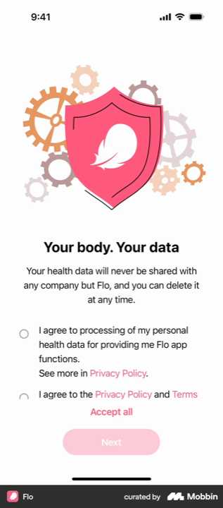
Flo Référence
« Your body. Your data. » · « Your health data will never be shared with any company but Flo, and you can delete it at any time. »
La réassurance vend avant le juridique. Illustration bouclier, promesse forte, 2 cases distinctes + raccourci « Accept all », CTA inactif tant que non coché. Le meilleur modèle pour un consentement de données sensibles.
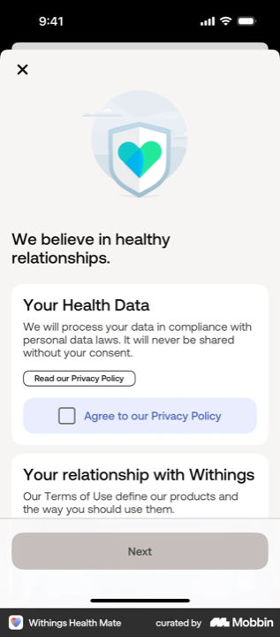
Withings Référence
« We believe in healthy relationships. » · Privacy (obligatoire) · Terms (obligatoire) · Communications marketing « Agree (Optional) », décoché.
Granularité exemplaire. 3 cases séparées, le marketing explicitement optionnel et non pré-coché, un lien « Read... » par bloc, « jamais partagé sans votre consentement ». Le gold standard RGPD.
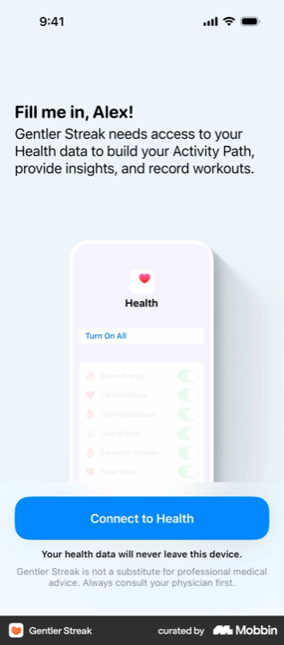
Gentler Streak Le geste clé
« Connect to Health » · juste sous le bouton : « Your health data will never leave this device. »
La phrase de réassurance sous le CTA. Elle désamorce l'objection pile au moment de cliquer. LE détail à copier pour Kidsono, quel que soit l'accès demandé.
2 · Le pré-prompt (avant le prompt système)
Un écran maison, orienté bénéfice, qui prépare le dialogue iOS. C'est là que tout se joue (le prompt système, lui, est figé).
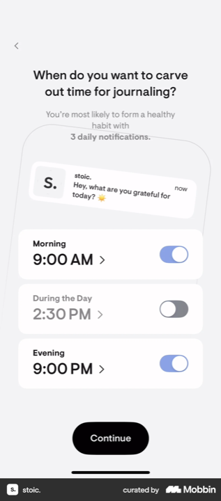
stoic.
« When do you want to carve out time for journaling? » + horaires réglables + aperçu de la notif.
Donne le contrôle. Horaires choisis + raison concrète (former une habitude) avant le prompt. Transposable au rappel « histoire du soir ».
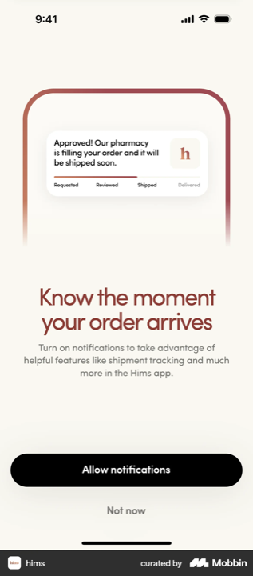
Hims
« Know the moment your order arrives » · « Allow notifications » / « Not now ».
Bénéfice tangible (suivi de commande) illustré par une maquette de notif. « Not now » minoré (texte gris).
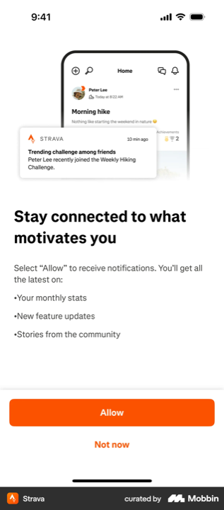
Strava
« Stay connected to what motivates you » + liste de bénéfices (stats, updates, communauté).
Pré-prompt avec liste d'avantages concrets. « Not now » secondaire vs « Allow » plein.
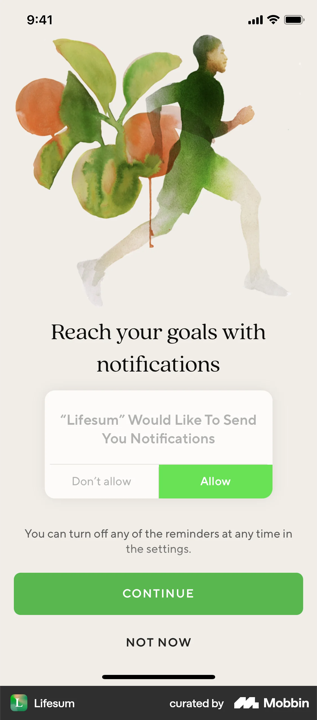
Lifesum
« Reach your goals with notifications » + faux dialogue système grisé, puis « CONTINUE ».
Montre un aperçu du prompt système avant de le déclencher. « NOT NOW » réduit à un lien.
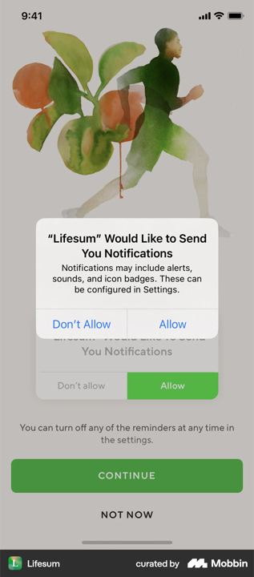
Lifesum système
Le prompt iOS natif qui suit. Boutons « Don't Allow » / « Allow » à poids égal, non stylable. Rappel : toute la persuasion est en amont.
3 · Consentement légal (CGU / Privacy)
Géré partout en mention passive sous le CTA de compte, pas d'écran dédié. Léger et standard.
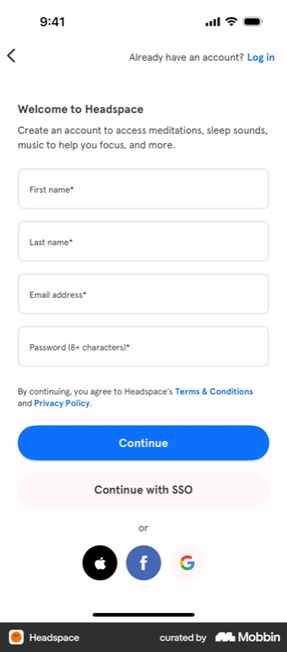
Headspace
« By continuing, you agree to Headspace's Terms & Conditions and Privacy Policy. »
Consentement légal passif intégré au CTA de compte, liens cliquables, zéro case. Le plus léger.
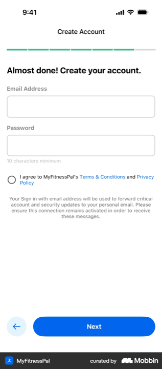
MyFitnessPal
Case : « I agree to MyFitnessPal's Terms & Conditions and Privacy Policy » sur l'écran de compte.
Une case sur l'écran compte, sans écran dédié. Sobre mais froid (ton juridique, mention data lourde).
4 · Opt-in marketing (côté parent)
Séparé du reste, explicite, non pré-coché : le bon réflexe RGPD si vous voulez la newsletter parents.
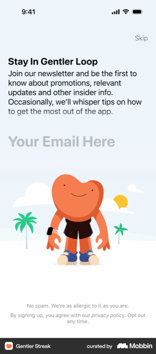
Gentler Streak
« Stay In Gentler Loop » · « No spam. We're as allergic to it as you are. » · « opt out any time ».
Opt-in honnête et léger. Consentement explicite, ton rassurant, skippable. Modèle propre pour la comm parent.
Ce qu'on prend pour l'écran de consentement Kidsono
- Structure « Flo + Withings » : illustration rassurante en haut, promesse de protection avant le juridique (« pas de pub, jamais vendu, effaçable »), puis le choix. Granularité si plusieurs finalités (analyse / marketing séparés, marketing non pré-coché).
- La phrase de réassurance juste sous le CTA (le geste Gentler Streak) : à mettre systématiquement.
- Accepter / Refuser à égalité : contrairement à la majorité du panel (« Not now » minoré). Sur une app enfants, l'équilibre est un signal de confiance envers les parents, pas une faiblesse.
- Ton bénéfice, pas juridique : « pour recommander les bonnes histoires », le détail derrière un lien.
- Consentement légal (CGU) = mention passive sous le CTA de compte (façon Headspace), pas un écran de plus.
- Le pré-prompt vaut aussi pour vos futures notifications (rappel « histoire du soir »), le jour où vous les activez.
L'avis
Force : ce panel donne enfin de vrais modèles (Flo, Withings, Gentler Streak) là où le corpus kids était vide. Le combo « réassurance-first + phrase sous le CTA + granularité » est directement transposable, et il colle à votre enjeu (confiance parentale).
Risques : ces apps sont wellness/santé, pas enfants. Elles n'ont pas la contrainte du consentement parental. À adapter : le ton « parents » et l'équilibre accepter/refuser plus strict que ce qu'elles font.
Position vs standard : en reprenant Flo/Withings, vous seriez au niveau des meilleurs sur le consentement données. L'équilibre accepter/refuser vous placerait même au-dessus du panel (qui minore le refus).
Benchmark visuel, mission Kidsono. 11 onboardings top-tier (source Mobbin, déposés par Charles), 206 écrans triés, 13 écrans de consentement lus en pleine résolution via 3 relevés parallèles. Captures rangées dans benchmark-consentement/apps/. Complète le rapport compte-rendu-ecran-consentement.html.